玄奘西行线路全程摄影（珍贵、全面、精彩）
内容摘要：玄奘西天取经，是从长安出发的。玄奘于唐贞观元年（公元六二七年）从长安出发去印度取经。大明宫遗址位于西安市北郊龙首原上。始建于太宗贞观八年（634年），存世270多年，其中240多年是唐王朝内政外交的中心。
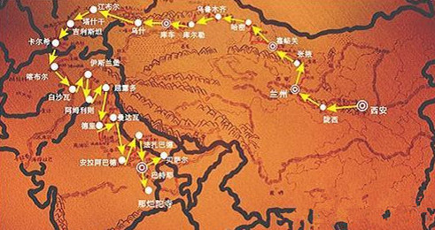
玄奘西行路线图
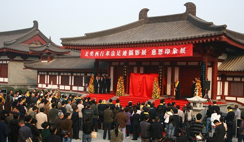
2009年10月28日上午，“玄奘西行文化展暨慈恩印象展”在西安大慈恩寺隆重开展。
冯其庸（中）
玄奘西行文化展是中国人民大学国学院原院长冯其庸教授在前往西域途中拍摄的众多反映佛教文化的珍贵图片资料。
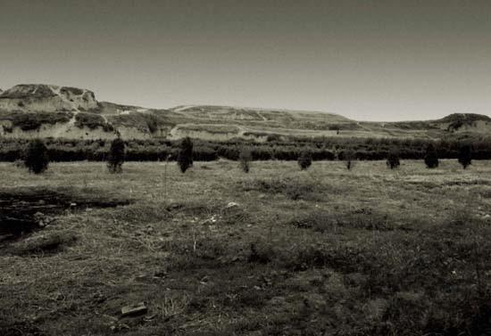
唐长安大明宫遗址全景
玄奘西天取经，是从长安出发的。玄奘于唐贞观元年（公元六二七年）从长安出发去印度取经。
大明宫遗址位于西安市北郊龙首原上。始建于太宗贞观八年（634年），存世270多年，其中240多年是唐王朝内政外交的中心。
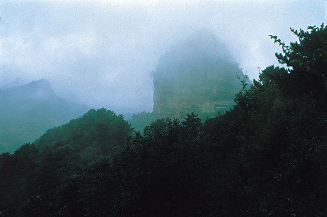
烟雨麦积
麦积山，在甘肃省天水市东南50公里之麦积乡，状如农家麦垛，故名。开凿于十六国后秦（公元384-417），大兴于北魏，西魏再修崖阁，北周李允信造七佛阁。隋开皇、仁寿间塑造摩崖大佛。着名辞赋家庾信曾为七佛阁写铭，唐开元间地震时此碑震落，崖面中间毁裂成为东西两部份，现存泥塑及石雕像7200余身、壁画1000多平方米，洞窟多凿于20至84米高的垂直崖面上，洞窟之间以凌空栈道相通连，工程奇险。麦积山石窟已有1500多年历史，以泥塑着称于世，与敦煌莫高窟、大同云岗、洛阳龙门并称为四大石窟艺术，亦是古丝绸之路上的佛教圣地。
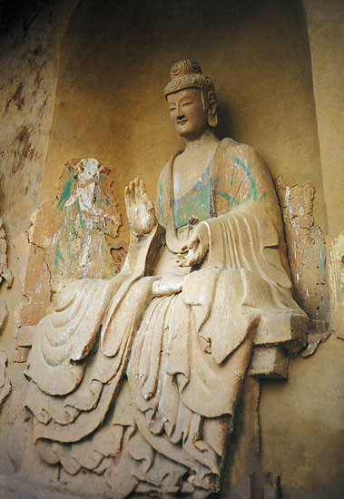
麦积山第44窟正壁主佛（西魏）
此像是麦积山塑像中的精品。像主眉眼细长、面部饱满、鼻直而端凝、嘴角微窝，两手施无畏印，结跏趺坐，神情端庄凝重，脸际眉间柔和而微笑的神情，流贯全身，更增加了此像的生气。
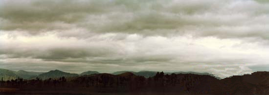
临洮风云
临洮是古代战争之地，唐代民歌《哥舒歌》：“北斗七星高。歌舒夜带刀。至今窥牧马，不敢过临洮。”看这漫天风云，令人想象古代的战争气氛。
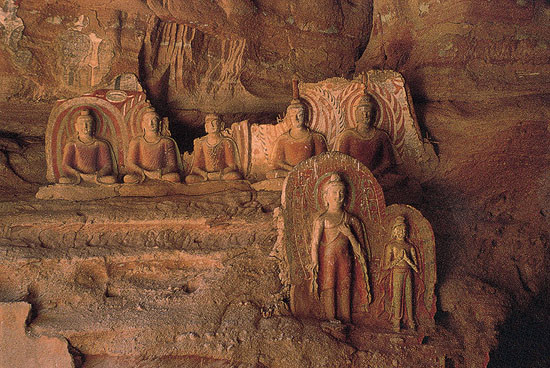
炳灵寺第169窟上部右侧之佛龛群
炳灵寺位于甘肃省永靖县。炳灵是藏语“千佛或十万佛”之意。开凿于西秦建弘年间（公元420年前后），地处黄河北岸的小积石山中，这里千峰林立，翠嶂蔽日，宛然世外仙境。石窟开凿在大寺沟西壁高60米的悬崖上。长2公里，上下四层，现存窟龛183个，共有石造像694身，泥塑82身，壁画900多平方米。炳灵寺石窟以石雕着称于世。据说现编号169窟，即唐述窟，为西秦乞伏炽盘时所开，有建弘元年（420）题记。本图为169窟南壁上部右侧之佛龛群，时代是西秦到北魏。塑并坐五佛及二立佛。
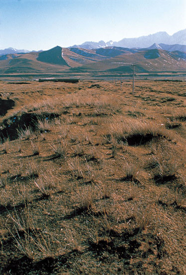
乌鞘岭
河西走廊东端玄奘途经之乌鞘岭。位于天祝藏族自治县境内，南临马牙雪山，西接古浪峡，地扼东西孔道，控河西咽喉，素有“河西走廊门户”之称，西汉张骞出使西域，唐玄奘西天取经，都经此岭。岭上主峰海拔4326米，经常阴云密布，沿甘新公路西望，乌鞘岭宛若长龙卧雪，起伏绵延。
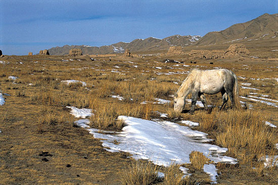
饮马长城窟
河西走廊之古长城。自兰州西行，经绣花庙滩古长城所见。
1990年11月15日，离武威西行，一路依长城而行，至水泉子，居民说此为秦始皇所筑城，复前至绣花庙滩，古城遗存甚多，右侧长城更为完整，适雪后，长城皆为雪所覆，分外好看。城边枯草离离，尚有数马啃草根，皆边陲风情也。

黑水国故城
城在张掖市西北十七公里处，筑于西汉，唐时尚未废。
1990年11月16日下午调查黑水国故城，途经黑水河，河水西流。黑水故城有南北二城，南城较完整，即予所至者。城墙甚高，呈方形，左侧有一小方形堡。
黑水国之名，未见史籍，相传先秦时小月氏国都城即建于此。西汉霍去病击匈奴时，亦曾于此屯兵。
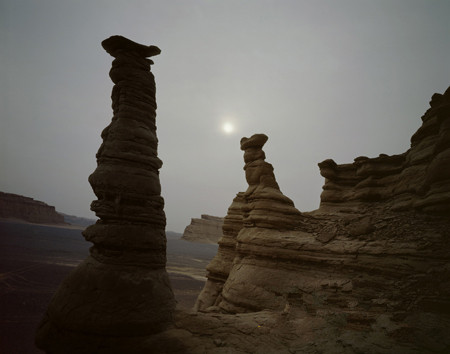
哈密南湖戈壁
摄于哈密市东南130多公里的南湖戈壁。
南湖戈壁位于莫贺延碛。莫贺延碛，古曰沙河，东起玉门关西抵伊吾国境，曾被认为是西域的起点。
我于2003年得入此大戈壁，第一眼便见证了《大慈恩寺三藏法师传》中“上无飞鸟，下无走兽，复无水草”的景象。四顾之下，日月蒙昧，天晦地暗；黑色砾石铺盖着沙层，“惊风拥沙，散如时雨”；诡异的雅丹突兀而起，“鬼设神使，风声鹤唳”。玄奘法师行至莫贺延碛，失手覆水，并“又路盘回不知所趣”，幸危难当头所乘老瘦赤马识途，终于逃离这“八百里沙河”。
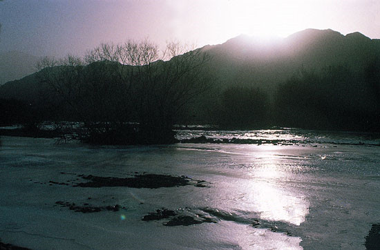
古白水涧道之一
沟通天山南北之古白水涧道。
从乌鲁木齐至吐鲁番，过达坂城，即进入白水涧道，老百姓叫它白杨沟，为天山之自然断裂带，纵深20多公里，为沟通天山南北的自然通道。风光旖旎，过者无不留恋。1990年12月11日严寒中予再过此道，曾题诗云：
古道一线开混沌。
天山莽莽此为门。
雪练九曲羊肠白，
红柳百丛鸟路昏。
万马奔腾来谷底，
千驼踯躅过险嶟。
我今吊古心犹怯，
绝巘横空欲断魂。
我还冒寒站在坚冰上，拍摄了不少照片。但可惜数年前洪水，此沟的旧日风光，已经荡然无存。所以这里的几张照片，已是古老的白水涧道的遗影了。
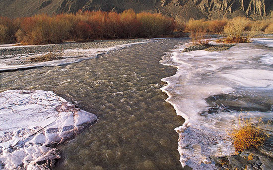
古白水涧道之二
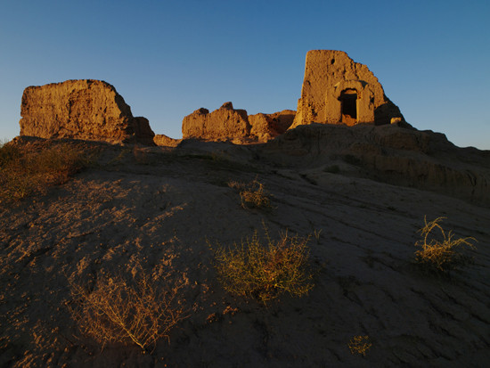
白杨沟佛寺
遗址位于哈密市柳树泉农场白杨沟内，被河水分为东西二部分。该佛寺兴盛于唐代，是哈密地区年代较早、规模最大的一座寺院。
出莫贺延碛之后，玄奘抵达一处佛寺。寺内有来自中原的汉僧三人，一老者思乡心切，抱法师痛哭，伤心不已。但该寺甚小，所以由规模猜测，应非白杨沟佛寺。然，玄奘法师在伊吾停留十日有余，鉴于此寺之兴盛及规模，想必定是吸引过玄奘驻足。
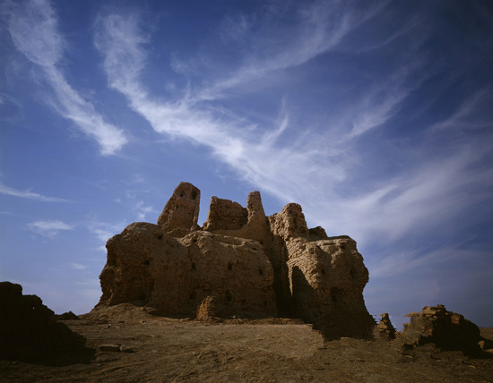
连木沁烽燧
连木沁烽燧位于吐鲁番市鄯善县连木沁乡汉都阿克都村东南约1.3公里。它是吐鲁番盆地保存最完整、最壮观的烽燧之一。连木沁烽燧残高9.5米，土坯砌成，基底呈方形，墙体呈上小下大的梯形。
烽燧，白日生烟为烽，夜晚燃火为燧，亦称烽火台。依据地势，每隔一段距离即筑一座。遇有敌情，士兵燃烟起火，逐次传递，边疆警报就这样在最短时间内被传达至国都。唐边塞诗人岑参诗句中对于烽燧有着生动而贴切地描述——“塞驿远如点，边烽互相望”。玄奘法师西行之始，偷越国境，“昼伏夜行”，躲避的正是这一座座坚实的边塞堡垒。

火焰山
火焰山横卧于吐鲁番盆地中部。火焰山上其实并没有火焰，只因山体赤红，山形犹如冲霄烈焰而得名。《隋书》谓为“赤石山”。
玄奘法师曾在此山环抱下的高昌故城停留月余日。

唐高昌故城
题高昌城：
故宫断壁尚巍峨。
双塔亭亭夕照多。
想见当年繁胜日，
满城香火念弥陀。
高昌故城，位于吐鲁番县城东面约40公里的火焰山乡。巍峨高大的城墙远远即可以望见。外城墙基厚12米，高11.5米，周长约5.4公里。内城在外城中间，城墙为夯土筑成，建筑年代较外城更早，宫城在最北面。玄奘西天取经时，适为高昌王麹文泰时期，玄奘于麹氏延寿六年正月到高昌（629），在此停一月，麹文泰为其备往返二十年之资，助玄奘西行。故予谓高昌乃玄奘西天取经第二个起点。
高昌城奠基于公元前一世纪，是西汉王朝在车师前国境内的屯田部队所建，到十三世纪末（元初）废弃，前后使用了1300多年，它与交河城都是吐鲁番地区历史沧桑的见证。

高昌故城纵观
再题高昌：
乘危远迈有孤僧。国主高昌亦可称。
难得焚香深结拜，西天一路好徐行。*
注：玄奘过高昌，高昌王麹文泰坚留，玄奘不允，乃与高昌王结为兄弟，由王备资乘文书人员送行。
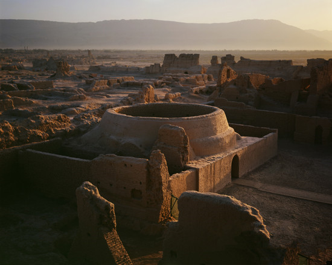
高昌故城大佛寺
9世纪中晚期，回鹘人攻占高昌王国，统治此地达400年之久。位于故城西南部的大佛寺即建于回鹘高昌时期。它占地10000多平方米，是城内最大的佛寺遗址。寺内的讲经堂广大而恢弘，是当年高僧宣讲佛法的地方。高昌王国信仰佛教的历史漫长而久远，大佛寺是这一历史的忠实见证。《魏书？高昌传》记载高昌“俗事天神，兼信佛法”，它曾与于阗、龟兹并称为我国西域三大佛教中心。
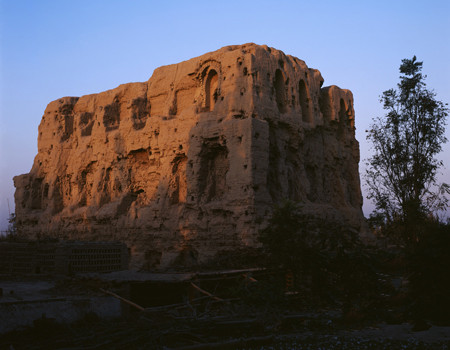
台藏塔
台藏塔距高昌故城1.2公里，建于隋唐时期，是高昌王国的藏经塔。该塔残高约20米，东、北面均有佛龛。据说，塔内曾供有一巨大佛像，于二十世纪初被毁。
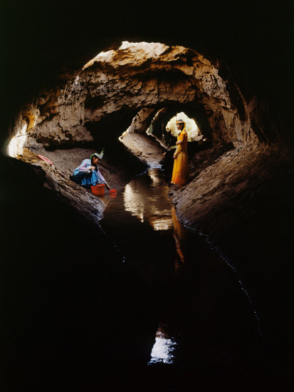
坎儿井
“迁出天山水，滋润万顷田”说的正是吐鲁番人民的智慧结晶——坎儿井。天山融雪在吐鲁番盆地受到火焰山的阻挡，渗入戈壁变为潜流。日积月累，使地面以下含水层不断加厚，储水量大。人们根据地势落差，挖竖井打通地下潜流层，使水流顺暗渠流下来，这就是坎儿井。吐鲁番盆地纵横交错着1100条坎儿井，全长5000公里，与万里长城、京杭大运河并称为中国古代三大工程，这是古代吐鲁番人民的伟大创造。

吐峪沟石窟
石窟，初为佛教僧人修行栖身之所，故多开凿于远离尘世的临水山崖上。随着佛教造像艺术的逐步成形，佛教徒们以雕塑和绘画形式将他们所崇拜的佛祖和佛教事物赋之于形，装饰于石窟内，相依相伴，虔诚供奉。于是，石窟，这一充斥着佛教精神力量的艺术宝库，有了另一个更辉煌也更为人所熟知的名字——千佛洞。
吐峪沟千佛洞大约开凿于公元五世纪的北朝。唐《西州图志》谓为“丁谷窟”。它静处于吐峪沟乡内，西距高昌故城15公里。从史籍了解到，唐代的吐峪沟，寺院重重，香火袅袅，背依危峰，下临清溪，绿树掩映，沟谷深处，难见星月。
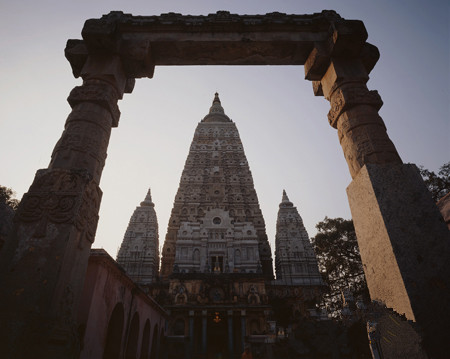
柏孜克里克千佛洞
位于吐鲁番县城东南的火焰山沟谷中，距高昌城22公里。千佛洞开凿于沟西崖壁上，木头沟即在洞窟下面蜿蜒流出。
现在较早的洞窟是公元六世纪（唐代初年）麹氏高昌时期的遗存。
柏孜克里克千佛洞最繁盛的时期是西州回鹘时期，公元九世纪中叶，回鹘人在高昌建立王国，并崇信佛法，于是这里成为回鹘国王家贵族寺院，现存大部分洞窟即为此时所建。所以现存的柏孜克里克石窟是回鹘文化艺术的宝库。
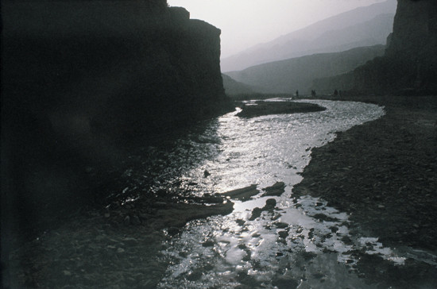
柏孜克里克千佛洞外景——木头沟曙色
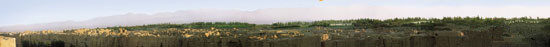
唐交河城全景
交河故城为西域三十六国之一的车师前国的国都。建于原始台地之上，四周崖岸壁立，周绕河谷。现城中所存建筑，皆为唐代所遗。1997年9月14日，我第6次到新疆，第5次到吐鲁番，曾绕交河城步行一周，得交河城外部全貌。
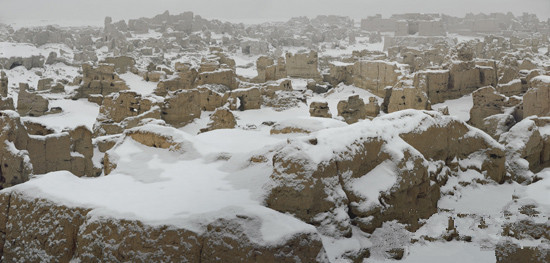
雪压交河
吐鲁番已近30年没有下过大雪，而今却以如此“盛情”来迎接我，令我感动。用镜头来记录交河的人很多，能有幸定格下银妆素裹的交河，表现雪中交河古城的恢宏气势，实属天赐良机、千载难逢。按耐不住喜悦的心情，分两次拍摄完成了这幅作品。
法师是否曾亲历交河，并无佐证。但在他感谢高昌王之厚赠的启文中，有这样一句话：“伏对惊惭，不知启处，决交河之水比泽非多，举葱岭之山方恩岂重。”如此看来，交河故城对玄奘法师应当不是陌生之地。
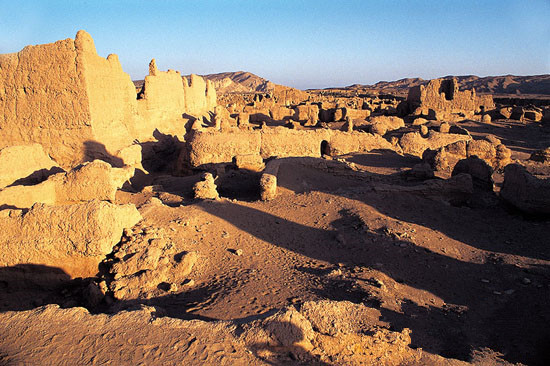
交河故城远眺 之一
九月十日重到交河城感赋：
千家万室尽摧隤。
兀立斜阳有余哀。
何处诗人留旧迹*，
教人踯躅复低徊。
注：唐诗人岑参曾到此。
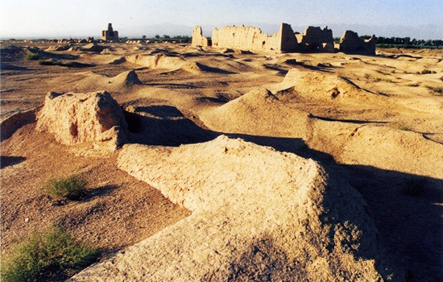
交河故城远眺 之二
中间右侧是寺庙大殿，远处高耸的建筑是佛塔。
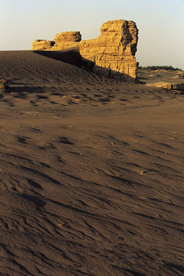
无半城
玄奘离开高昌西行途经之无半城。
在新疆吐鲁番沙漠中，为近年所新发现。《大慈恩寺三藏法师传》云：“从是西行，度无半城、笃进城后，入阿耆尼国。”可见无半城是玄奘当年所经之城。我于1997年9月去调查过，故城现存面积甚大，其城墙宽厚高大，并可明显看出筑城时城墙用牛踩过的痕迹。
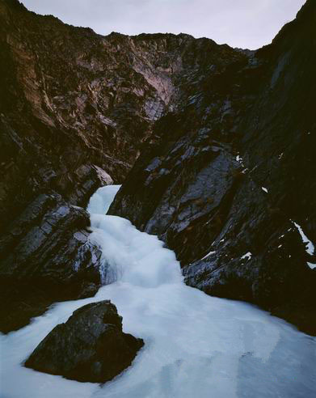
阿夫师泉
“泉在道南沙岩，岩高数丈，水自半而出。”（《大慈恩寺三藏法师传》）
阿父师泉在天山前山博尔托乌拉山中一条天然沟谷——苏巴什沟中，距托克逊县城西南30多公里。据说，苏巴什沟就是在唐代之前连接吐鲁番盆地与焉耆绿洲的“银山道”。关于阿父师泉，《大慈恩寺三藏法师传》讲述了一个传说：有一高僧为行至此地水尽困乏的商旅登崖作水，在众人“阿父师为我下水”的呼喊声中，泉水自半山奔涌而下，而此时高僧已寂灭于崖顶。玄奘法师对这一宣扬佛法的圣迹十分敬畏，在穿越苏巴什沟进入焉耆国的路途中，不仅觅见了阿父师泉，还在泉边虔诚地住过一宿。
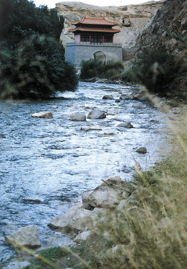
铁门关
在今库尔勒北哈满沟孔雀河入谷处，昔玄奘取经所经处也。我于1995年8月31日从库尔勒出发到铁门关，并沿山边小路前行甚深，此小道，亦即当年玄奘经行故道也。予曾有诗云：
万山重叠铁门关。
一水东流去不还。
唯有千年古丝路，
依然绝壁危峰间。
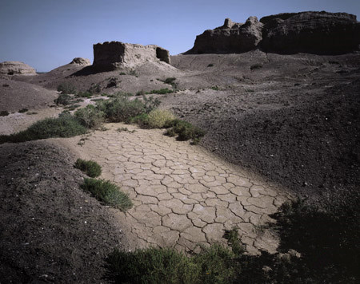
七个星佛寺
七个星，阿耆尼国伽蓝。伽蓝，一名僧伽蓝，即寺院，梵文意为众园。该佛寺为阿耆尼国中最大的一处佛教寺院，晋唐时期最为繁荣。
阿耆尼国，位于今新疆焉耆回族自治县。阿耆尼，亦称焉耆、乌耆、乌缠、亿尼等，为梵文之音译，意喻为火，也有可能是古印度神话中火神的名字。
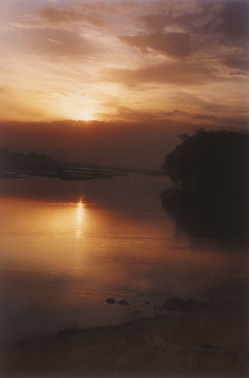
玄奘渡头
即焉耆城外之开都河。《大慈恩寺三藏法师传》云：“渐去遥见王都，阿耆尼王（焉耆）与诸臣来迎，延入供养，……前渡一大河，西履平川，行数百里，入屈支国（库车）界。”这里的“渡一大河”，就是开都河。我于1986年10月1日自库车回乌鲁木齐，日落时汽车恰到开都河畔，遂抢拍得此影。

库车北部的却勒塔格山
此处众山五色相间，当地人称之谓“五彩山”。如遇晴日，其色彩之煊丽，虽画图亦所难及。
玄奘到达龟兹国后，“时为凌山雪路未开，不得进发，淹停六十余日”（《大慈恩寺三藏法师传》）。
库车，古称龟兹。《大唐西域记》称之为“屈支”。屈支国，北以天山南麓为界，南抵塔里木河，巴尔楚克以东，轮台以西。玄奘描述此国：“气序和，风俗质。文字取则印度，粗有改变。管弦伎乐，特善诸国。”
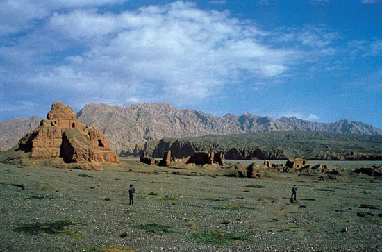
昭怙厘大寺—西寺
又称苏巴什古城，位于库车县东北20公里的库车河东西两岸，寺建于魏晋时期，垣墙今尚存甚多，玄奘取经时曾到过此寺，其所作《大唐西域记？昭怙厘二伽蓝》云：“荒城北四十余里，接山阿隔一河水，有二伽蓝，同名昭怙厘。……佛像装饰，殆越人工。……”今存东西两寺，中隔一河。
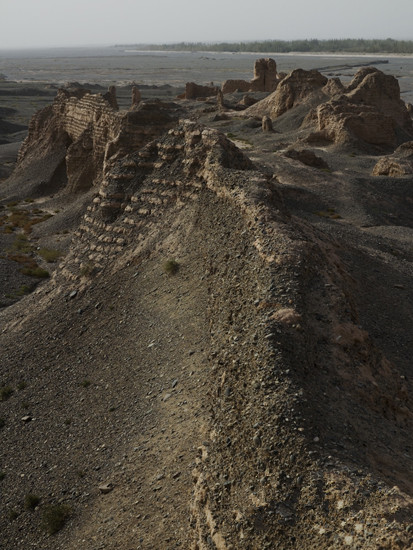
昭怙厘大寺—东寺
该寺建于东汉，又称雀离大寺，由东西两寺组成，在西域佛教史上占有崇高地位。玄奘途经龟兹，曾在这里诵经说法。
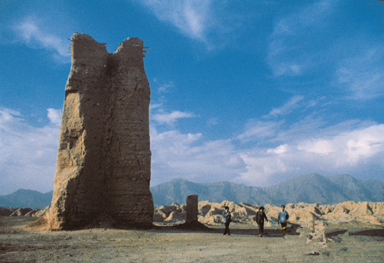
克孜尔尕哈烽火台
位于库车县城西克孜尔尕哈千佛洞对面之公路旁，高约15米，建于西汉，气势雄伟，是目前保存完好而最高的烽火台。我于1986年10月及1993年9月两次到现场拍摄此景。此后又曾去过多次。
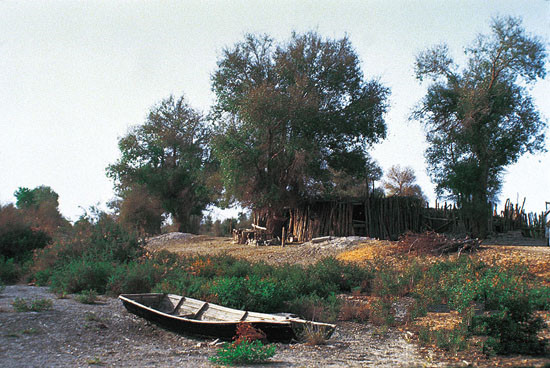
一家村
塔里木盆地深处，塔里木河边的一家村。
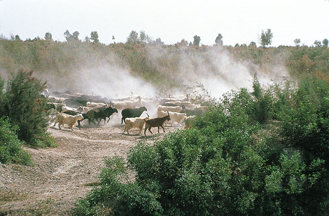
羊群归来
我于1993年9月22日于库车发车进入塔里木盆地，先到塔里木乡，随即进入原始胡杨林，我在胡杨林深处的一个独家村边，遇到了归来的羊群，得此一景。
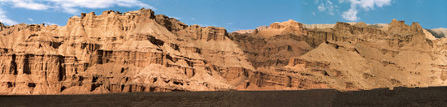
万户千门天禄阁
此处山形犹如重楼叠阁，万户千门，故当地人称之谓“布达拉宫”，极言其山形如宫阙也，由此前行，即可达克孜尔千佛洞。
题龟兹山水：
地上仙宫五百闉。
赤霞遥接北天门。
平生看尽山千万，
不及龟兹一片云。
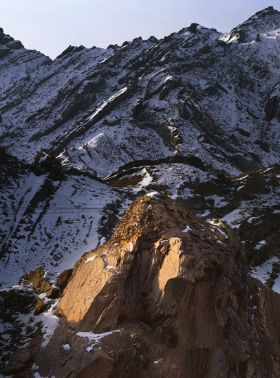
盐水沟烽燧
库车大峡谷内有盐水沟古道，为玄奘法师当年西去经行之路。
盐水沟古称“盐关”，是古代军事与商旅要道。沟内仍遗存古烽燧，耸立于沟谷西岸的石壁上，高三至四米。
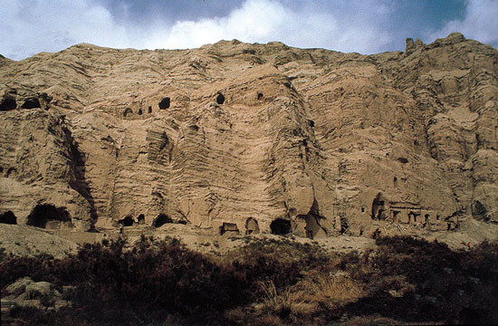
克孜尔千佛洞
位于拜城县克孜尔乡东南7公里，始建于公元三、四世纪或更早，繁盛期在六、七世纪末，吐蕃占领后逐渐废弃。它是龟兹文化艺术和历史的代表与见证。
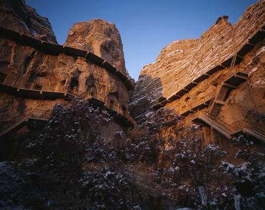
克孜尔石窟
克孜尔石窟处于拜城县东南六十七公里，木扎特河东岸的明屋塔格山峭壁上。山岩呈赤色，石窟因名克孜尔，取维语“红色”之意。它是我国已知开凿年代最早的石窟寺，约始开于东汉末年（公元3世纪）。壁画跨越了古龟兹国佛教信仰由小乘向大乘过渡的漫长年代。风格融会贯通了中亚健驮逻和我国中原的佛教艺术，并开创了影响中原石窟的“龟兹风”。其中的菱形格本生、因缘故事画堪称世界佛教石窟之最。
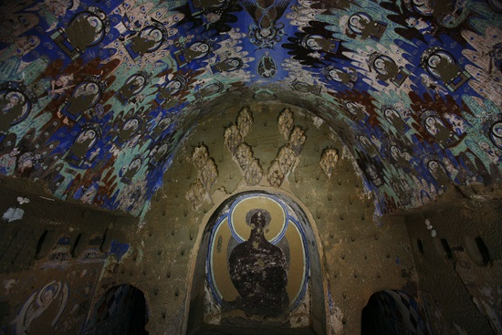
克孜尔石窟171窟 主室正壁
此窟约为公元5世纪之遗存，是典型的中心柱窟形制。正（北）壁中部开券顶龛，龛内残留佛头光及背光。龛外上方分布有菱格排列的泥塑彩绘山峦，大部分脱落。主室西壁绘因缘佛传。主室券顶中脊绘天相图，自北而南依次为：月天、立佛、金翅鸟、立佛、风神、日天。两侧券腹各绘6列菱格因缘和1列菱格本生故事。
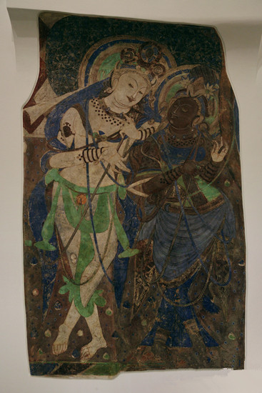
善爱乾闼婆王及天神
这幅壁画于19世纪初被德国皇家吐鲁番考察队割取，现藏于柏林亚洲艺术博物馆。壁画原出于克孜尔171窟北甬道（后室）之西壁，紧临后室正壁涅磐佛像的双脚旁。宽134cm，高209cm。
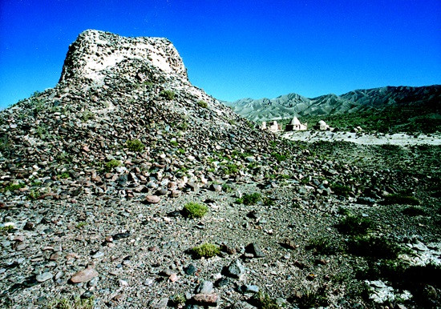
别迭里山口之唐代粟楼峰
玄奘西行出别迭里山口，途中先经此烽。
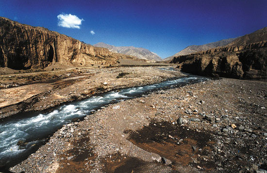
别迭里山口
玄奘西行取经，由此处出境。海拔4000多米，在今阿克苏境内乌什城之西的群山中。予于1993年9月到此。
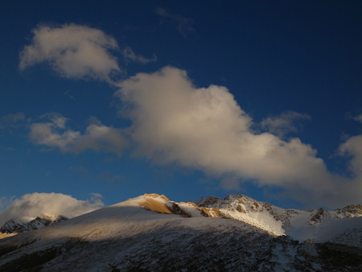
风雪行路 翻越凌山
摄于吉尔吉斯斯坦边境。凌山意即冰山，突厥语作木兹阿特或木扎特，居葱岭北隅。天山山脉横贯我国新疆中部，向西延伸入吉尔吉斯斯坦、哈萨克斯坦境内。《大唐西域记》所指的凌山当是对今阿克苏西北部跨越中国和吉尔吉斯斯坦边境的天山群峰的概称。研究者或指木素尔达坂，或指勃达岭，以勃达岭为是，今称别迭里。
“冰雪所聚，积而为凌，春夏不解，凝冱汗漫，与云连属，仰之皑然，莫睹其际”，《大慈恩寺三藏法师传》描述如是。玄奘法师一行翻越凌山，艰险惨烈，遭遇雪崩与暴风雪，和高原反应对抗了7天之后才走出凌山。人与牲畜冻死的不在少数。
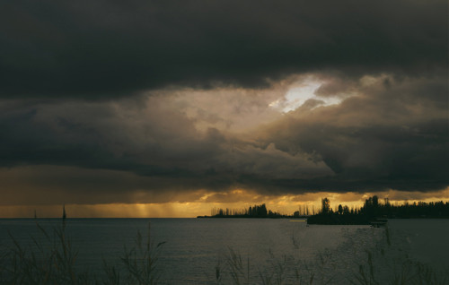
伊塞克湖
伊塞克湖，位于吉尔吉斯斯坦东北部，天山山脉北麓。《大唐西域记》谓为“大清池”。《大慈恩寺三藏法师传》写道：“清池亦云热海。见其对凌山不冻，故得此名，其水未必温也。……周千四五百里，东西长，南北狭，望之森然，无待激风而洪波数丈”。突厥语作“伊塞克廓尔”。伊塞克湖是世界第二大高山湖泊，由多达180条河川注入，四周围高山海拔均在4000公尺之上。
玄奘行经此地时，伊塞克湖地区为西突厥活动中心，丝路北道必经之地，往来商贾集结之所。记载此湖既早且详的，当以玄奘为第一人，曰：“周千余里，东西广，南北狭。四面负山，纵流交凑，色带青黑，味兼咸苦，洪涛浩汗，惊波汩淴。龙鱼杂处，灵怪间起，所以往来行旅，祷以祈福，水族虽多，莫敢渔捕。”（《大慈恩寺三藏法师传》）
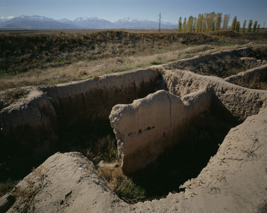
碎叶城
碎叶城，又作素叶城、素叶水城，因其依傍素叶水，故得此名。其故址在吉尔吉斯斯坦托克马克城（Tokmok）西南8公里处的阿克-贝希姆（Ak-Beshim）。碎叶城曾是唐王朝经营西域的“安西四镇”之一。诗仙李白诞生于此地的说法更增添了这座古城的亲切之感。
玄奘法师在此城见到西突厥统叶护可汗。得到可汗所赠丰厚资助及通行国书，并派一名通解汉语的少年随行，一路护送西去。
《大慈恩寺三藏法师传》云：“至素叶城，逢突厥叶护可汗。方事畋，戎马甚盛。……既与相见，可汗欢喜，云：‘暂一处行，二三日当还，师且向衙所’。……三日可汗方归，引法师入。可汗居一大帐，……法师去帐三十余步，可汗出帐迎拜，……因停留数日，……又施绯绫发服一袭，绢五十匹，与群臣送十余里”。
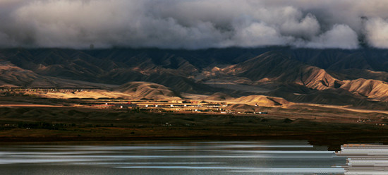
纳伦河
案《大唐西域记》：“素叶以西数十孤城，城皆立长，虽不相禀命，然皆役属突厥。”唐初，西突厥统叶护可汗实力强大，掌控了西域诸多小国。在统叶护的庇护之下，玄奘的路途变得平静而规律，此后一段行程在《大唐西域记》的记录大多犹如走马观花，《大慈恩寺三藏法师传》亦叙如流水。其中有一些国家是玄奘法师所听闻，而非亲历之地。
纳伦河横贯吉尔吉斯斯坦全境，它是中亚大河锡尔河的上游。锡尔河，被玄奘称为叶河。《隋书》、《新唐书》作药杀水，为中世纪波斯语译音，意为“珍珠”。
塔什干的师生们
《大唐西域记》有云：“自素叶水城至羯霜那国（今乌兹别克斯坦撒马尔罕），地名窣利，人亦谓焉。”窣利即《北史？西域传》之粟特，为公元5-8世纪，中亚阿姆河和锡尔河之间的昭武九姓国的总称。
塔什干，古代赭石国，也作石国，是昭武九姓国中仅次于康居的大国。玄奘法师在瓜州的向导石盘陀就来自于这里。乌兹别克斯坦名城塔什干拥有2000多年历史，在13世纪成吉思汗西征时尽毁。20世纪60年代的一次重大地震又一次摧毁了这座城市，塔什干的现貌是前苏联政府所重建。
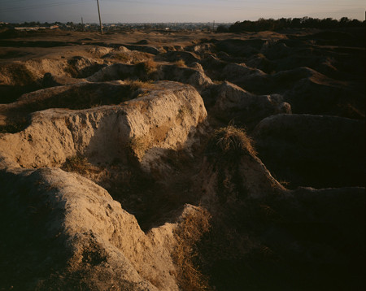
撒马尔罕古城遗址
今撒马尔罕周边地区曾经存在过众多西域城邦，其中以康国为诸国宗主，玄奘称其飒秣建国，汉代作康居。《隋书》、《唐书》皆为康国。该国之都城与国同名，遗址位于今乌兹别克斯坦撒马尔罕以北4公里的阿夫拉西阿卜（Afrasiab）高地上。约建于公元前6世纪，古波斯帝国时曾为索格底亚那的首府，时称“玛拉坎达”。亚历山大和成吉思汗，都曾在这里留下了征战的身影。撒马尔罕古城也曾是铁木尔帝国的首都。唐代为中亚最大城市。玄奘西行恰此强盛之时，留下了“异方宝货，多聚此国……凡诸胡国，此为其中……”的印象。
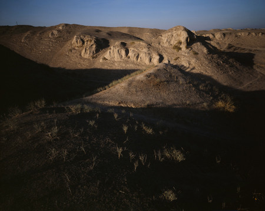
撒马尔罕古城东门——中国门遗址
古城的东门叫“中国门”。这不仅仅因为古城正对着遥远的东方，更显示了中国在中亚贸易中所占据的主导地位。
有了这扇大门，繁华的长安城得以与此地一脉相通。如今，这里连门的形状也难以辨别，仅留二山坳间一条地势稍低的窄道。
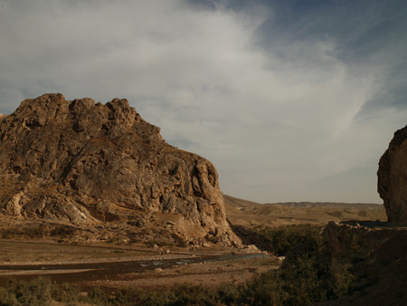
铁门关
铁门关遗址位于今乌兹别克斯坦沙赫里萨布兹（Shahr-isabz）以南约90公里处。它是羯霜那国的坚实屏障，西突厥汗国视其为西界。此城同国名，羯霜那城始建于7世纪初，从14世纪中叶的帖木儿时代改称为沙赫里萨布兹。玄奘途经羯霜那国，对于铁门留下了生动翔实的记叙：“铁门者左右带山，山极峭峻，虽有狭径，加之险阻，两傍石壁，其色如铁。既设门扉，又以铁固，多有铁铃，悬诸户扇，因其险固，遂以为名。”（《大唐西域记》）
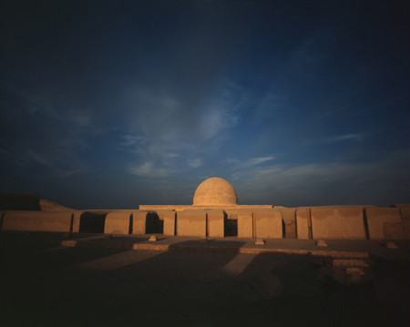
法雅兹泰珀古代佛教寺院
在今乌兹别克斯坦铁尔梅兹（Termez）西北约7公里的地方，有着一个古城遗址和众多佛教遗迹，据考证，这就是《大唐西域记》里讲到的呾密国。中亚佛教文化正是在此孕育和传播，玄奘盛赞呾密国“诸窣堵波（佛塔），及佛尊像，多神异，有灵鉴。”
法雅兹泰珀寺院（Faiyaz-tepe）是铁尔梅兹古代的寺院之一，曾出土过着名的“佛陀三尊”雕像。
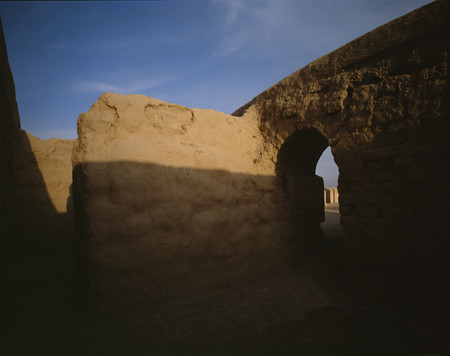
法雅兹泰珀寺院僧房
法雅兹泰珀寺院外观宏伟而完整，至今佛塔、僧房等都清晰可辨。当地人为保护佛寺，曾在墙体上糊了一层泥土。透过脱落的墙皮，2000前古人用泥土压制而成的砖坯再一次显现了出来。
“佛陀三尊”雕像
“佛陀三尊”雕像出土于法雅兹泰珀寺院，现陈列于塔什干历史博物馆内。“三尊”被置于尖顶佛龛内，佛陀身后的两侧分立弟子迦叶和阿难陀，背后再饰以内外二层菩提枝叶雕饰，立体感与层次感发挥得淋漓尽致。人物发髻及衣服曲线婉转流畅。五官自然而细腻，佛陀面目集肃穆、高贵、慈祥于一体。雕像周身散发着静谧祥和的佛教气息，使人顿生敬仰之心。

海拉通大桥
海拉通大桥是乌兹别克斯坦和阿富汗之间的唯一通道。它全长约900多米，是一座铁路、公路两用桥。桥正中有两道铁门，分别代表着乌兹别克斯坦和阿富汗的国境。联合国援助物资和军用物资，均经由这里运入阿富汗。
大桥下是缓缓流淌的阿姆河，玄奘称之为缚刍河。它和锡尔河一同孕育了中亚文明。
海拉通大桥闪耀着纯白的钢铁身躯，紧紧牵系着战争与和平的两片天空，不离不弃。它还有另一个名字——友谊桥。
阿富汗马扎利沙里夫即景
在阿富汗北部城市马扎利沙里夫（Mazar-i-Sharif）西20多公里处的巴里赫镇，有一座古城，它就是古代的缚喝国。缚喝国，大夏国之都城，曾是其政治、宗教、商业中心。贵霜王朝时期，为大雪山以北地区的佛教中心。
按照伊斯兰教的教规，女穆斯林出门时必须蒙面，以避开男人们邪恶的目光，宗教意识强烈的阿富汗妇女无一例外的遵守着这一传统，将自己遮盖得严严实实，显得神秘而不可侵犯。
兴都库什山下的家园
兴都库什山（Hindu-Kush），中亚的高大山脉，大部分位于今阿富汗境内。“大雪山”是它在《大唐西域记》里的名字，玄奘法师翻越此山，倍尝艰险，感叹道，“若不为众生求无上正法者，宁有禀父母遗体而游此哉！”（《大慈恩寺三藏法师传》）可见，法师亦是寻常之人，身居险恶而历经磨难，这一切坚强支撑完全来源于对佛法坚贞的信仰和对真理的渴求。
兴都库什山的深处，即是赫赫有名的巴米扬山谷，古代梵衍那国的所在。玄奘在梵衍那，对该地“金色晃曜，宝饰焕烂”的一对巨大立佛和一座长千余尺的卧佛像赞叹不已。
阿富汗喀布尔市
阿富汗首都喀布尔市位于兴都库什山南麓，喀布尔河穿城而过，群山环抱，地势高阔。此城为古代迦毕试国的属地。迦毕试，唐时称罽宾，曾是贵霜王朝的夏都，也是古代大夏通往印度西北的交通和战略要地。
玄奘时期的迦毕试国，富庶且强大，印度北部的健驮逻国和喀布尔流域的众多小国，都向其称藩纳贡。这是玄奘进入印度之前所抵达的最后一个国家，出迦毕试国，则入北印度境。
开伯尔山口
开伯尔山口（Khyber Pass）是中亚地区与南亚次大陆之间最大且最重要的山隘，是由中亚进入南亚印度次大陆的唯一通道。波斯人、希腊人、大月氏人、蒙古人，历史上的诸多征服者，都曾经由此山口出入南亚次大陆。16世纪初，中亚封建主蒙古—突厥族后裔巴贝尔，带领军队通过开伯尔山口进入印度，建立了庞大的莫卧尔帝国。
开伯尔山口应属古那揭罗曷国，《西域传》云：“东西六百余里，南北二百五六十里，山周四境，悬隔危险……”。玄奘步行的开伯尔山口古道，据说最窄处仅十几公尺宽。
开伯尔门
巴基斯坦白沙瓦城边，通往开伯尔山口的开伯尔门。
巴基斯坦街头
彩车，这里的一道独特风景线。巴基斯坦人不会让你找到两辆色彩和装饰相同的车。无关于宗教，这可能是一种文化，一种习俗，或许只是一种生活的情趣。据说，当地有专门的汽车美容行业，价格不菲却生意盈门。浓妆艳抹的各式汽车，与素面朝天，千篇一律的白纱妇女形成鲜明的对比。“大花车”俨然已成为巴基斯坦人在生活中为自己所制造的“色彩平衡”和“视觉慰籍”。
塔克伊巴希古代佛教遗址
塔克伊巴希古代佛教遗址（Takht-i-Bahi）坐落在今巴基斯坦西北边境省白沙瓦东北约80公里的一座高山之上，约建于公元2-3世纪。塔克伊巴希以其独特的建筑布局和为数众多的大型佛龛闻名于世，被称为“最美丽的健驮逻寺院”。
白沙瓦地区曾经是古代健驮逻国的中心。“健驮逻”这个名词，在世界佛教艺术史上，有着至高无上的地位。公元前4世纪末，亚历山大入侵南亚，将希腊绘画及造像艺术带到了健驮逻，于公元前3世纪接踵而至的佛教相结合，形成了举世闻名的“健驮逻佛教艺术”。
玄奘抵达时，该国已役属于迦毕试国，佛教渐渐退废，曾经辉煌的健驮逻国，在玄奘法师的记忆中已然黯淡无光——“僧伽蓝十余所，摧残荒废，芜漫萧条。诸窣堵波颇多颓圯。天祠百数，异道杂居。”（《大唐西域记》）
喀布尔河与印度河交汇处
滋养了健驮逻文明的喀布尔河（Kabul River）在这里完成了它的使命，投入印度河的怀抱。驾车由白沙瓦出发，沿喀布尔河行驶约45公里，就到达了两河的交汇处。多么奇异而壮美的景色，两条大河尚未完全交融，喀布尔河的浊和印度河的澈，流露出截然不同的个性——前者张扬，后者深沉。
两河相汇的东北不远处，是古代印度河的一个重要渡口，即玄奘提及的乌铎迦汉荼城的所在。此渡口是古代从中亚、波斯、迦毕试及健驮逻诸国进入中印度的必经之地。《大唐西域记》：“从此（钵露罗国）复还乌铎迦汉荼城南渡信度河。”不仅仅是玄奘法师，据季羡林先生《大唐西域记校注》说，亚历山大远征军班师回朝也曾在此渡河。
巴基斯坦街头的马车

法王塔
巴基斯坦现存最大的佛塔法王塔，是塔克西拉古城的重要遗址之一。
塔克西拉古城有2500年的古老历史，是古印度西北部的名城。“塔克西拉”是它的希腊名字，梵文原名为呾叉始罗，意为“石头之城”。很早以前，塔克西拉曾经是健驮逻王国的首都。玄奘时代，这里是呾叉始罗国。《大唐西域记》述之：“周千二余里。国大都城周十余里。……崇敬三宝，伽蓝虽多，荒芜已甚。”塔克西拉遗址位于今巴基斯坦首都伊斯兰堡西30公里处，遗址众多，主要有法王塔、焦里安寺院和西尔卡普古城等。
焦里安寺院遗址中的泥塑佛像
这片土地在漫长的历史中曾被来自于遥远东西方的多个民族所统治，多种文明的洗礼使健驮逻佛教艺术在塔克西拉激发出夺目的光芒。
焦里安寺院在2000多年前曾经是一所着名的佛学院。遗址中泥塑之留存在塔克西拉地区最为丰富。据说，玄奘曾在呾叉始罗停留了不短的时间，其间到各处传播佛法，深受爱戴。在焦里安遗址的趺坐台上，有一座现在人为纪念玄奘法师而竖立的雕像，这位大唐高僧在人们心目中的地位也就不言而喻了。
西尔卡普古城遗址
这座由大夏希腊人创建的城市最早出现于公元前2世纪，整体格局运用了当时希腊化的“棋盘式”。此后相继统治这片土地的塞种人、安息人和贵霜人在此废墟上改建和扩建城市，将这种风格延续下来。5世纪末，征战至此的白匈奴将塔克西拉的城市尽数摧毁，希尔卡普亦未能幸免。
古城中的圆形佛塔
佛塔处在一个私人住宅的开阔院落里，它是西北次大陆已知最古老的佛塔之一，年代约为公元前1世纪末。佛塔在地震中身首分离，遗落此地。据猜测，出于宗教崇拜，不同时代的人们曾在佛塔外围砌筑和加固石墙。
古城中的佛塔基座
佛塔塔基有双头鹰形象的浮雕，被认为是希腊风格。
古城中的佛塔基座
印度、巴基斯坦边境
古印度地理范围辽阔，包括今印度、巴基斯坦、孟加拉和尼泊尔等国在内的整个南亚次大陆，总面积400多万平方公里。
印度之名，起源于流经此地的大河——印度河。印度河早先在梵文中名为Sindu（信度），即河之本意。继而被公元前6世纪来到此地的波斯人用以命名其所在的辽阔土地，此后基于民族的更替和语言的差异，读音略有变化，不尽相同。我国对其有天竺、身毒、贤豆等诸多称谓。“印度”一词，最终出于玄奘之口，并沿用至今。案《大唐西域记》：“详夫天竺之称，异议纠纷，旧云身毒，或曰贤豆，今从正音，宜云印度。”
今天的印巴边境瓦尕口岸，两国边贸往来繁忙。图为巴基斯坦人正在搬运从印度进口的农副产品。
恒河
古印度文明的发展循着一条由印度河流域向恒河流域缓慢迁移的轨迹。蒙受了两条河流的恩泽，古印度文明几乎在历史的第一时间孕育而生、被推向高度发达的顶峰，而当之无愧的成为世界四大文明之一。
恒河，即殑伽河。据玄奘所说，民间称此河为“福水”，因为人们坚信恒河之水能够洗清罪孽，赐福于人，亦可超度亡魂。至今，印度人仍将恒河奉若神明，到这里“洗圣水澡”已经成为印度教徒的一大宗教活动。
传说，玄奘法师在一次乘船渡恒河时，遇到一批信奉难近母（印度教毁灭神湿婆的妻子）的强盗。他们不但洗劫财物，更要将身形俊美的法师杀而祭神。危机之时，风云突变，波涛汹涌。盗贼以为此僧非凡人之躯，恐触犯神灵，慌忙退却，法师因此逃过一劫。
牛在街道上随处可见
牛在印度文化中象征着富饶和仁慈。印度教徒们因为牛是大神湿婆的坐骑而认为它们具有神性。头顶这层神圣光环，牛儿们陪伴在人类身边，生活得怡然自得。
印度德里街头
人力三轮车是印度城市传统的交通工具，近年来已经成了一个特色观光项目。
德里街头的喧嚣混乱几乎无法用语言表述。人们似乎不分车道，也不知交通规则为何物。引擎的轰鸣声，汽车的喇叭声，人的叫嚷声此起彼伏、铺天盖地。
印度瓦拉纳西火车站
印度的种姓制度古老而根深蒂固。这一套严格制度将人由尊贵到低贱划分为4个等级：婆罗门、刹帝利、吠奢和戍陀罗。分别是修行祭祀者、管理者、工商业劳动者、以及奴隶。玄奘在《大唐西域记中》对这一制度作了详细说明，并说：“凡兹四姓，清浊殊流，婚娶通亲，飞伏异路，内外宗枝，姻媾不杂。”（《大唐西域记》）

鹿野苑
鹿野苑，佛陀初转法轮之地，即释迦牟尼首次讲述佛教教义的地方。玄奘形容其“区界八分，连垣周堵，层轩重阁，丽穷规矩。”又见诸《大慈恩寺三藏法师传》以“台观连云，长廊四合”之盛况。此寺是佛教四大胜地之一。
鹿野苑距瓦拉纳西约10公里之遥。瓦拉纳西，古名婆罗痆斯或迦尸，是古印度十六大国之一。玄奘抵此之时，婆罗痆斯的佛教已日渐衰落。历史的风云变迁，瓦拉纳西如今是印度教的神圣中心。
鹿野苑的阿育王柱
公元前3世纪，孔雀王朝的君主阿育王皈依佛教。他大力弘扬佛法，成为历史上佛教的最大庇护者。阿育王为纪念佛陀初转法轮，在鹿野苑立起一根石柱，世人尊称为阿育王柱。玄奘来到鹿野苑瞻仰佛迹，见此石柱，甚为惊叹，在《大唐西域记》中描述它“高七十余尺。石含玉润，鉴照映彻。”并说在人的诚心祈求之下，它能显现众生影像及人生善恶之相。
柱顶的四头连体雄狮是阿育王柱的精华所在，雕工精细、神形兼备，令今人赞为印度雕塑史上最精美的作品，甚至被选作印度国徽图案。柱顶现陈设于鹿野苑考古博物馆大厅中央，而柱身残留原地，已碎为五段，掉落的四段散落立于四周。石柱一如当初的滑腻如镜，光泽似玉，下段刻有阿育王铭文。
鹿野苑达麦克塔
达麦塔克（Dhamekh）是鹿野苑诸遗迹中最高大的建筑。这座实心塔高33.5米，下层以石为基础，直径28.4米，上层为砖结构，塔分八面，有许多佛龛，但塑像无存。塔身雕琢着各式精美的花卉藤蔓和几何图形。该塔为距今1400-1500年前笈多王朝之遗物。据玄奘记载，达麦克塔是梅呾丽耶（弥勒）菩萨受成佛记处。
鹿野苑僧房遗迹
2000前，佛陀和众弟子在这里搭建了简单的居所，平时四处游化传教，到了雨季，便回到此地度过安居期。公元2-3世纪，为了纪念佛陀的圣迹，教徒们在原地用石头和砖块砌起了一座僧院，它就是今天位于达麦克塔附近的摩犍陀俱提僧院。
在岁月和战争的摧残之下，僧院已是残垣断壁，但法师描述的“石为基阶，砖作层龛”的结构仍清晰呈现。门壁的石柱上还留有花卉浮雕。
鹿野苑古井
考古发现，早在公元前3000-前2000年，古印度人就发明了下水道和厕所，并挖掘了大量的水井和蓄水池。高度文明的城市规划设施令今人瞠目结舌。
鹿野苑里一口巨大的古井，外形独特，结构坚实，至少已有1000多年的历史。
锡克教教徒
锡克教为印度五大主要信仰之一，但信仰锡克教的人数仅约占印度人口的5%。佩剑、带钢镯、蓄发，尤其是将长发盘起，包上一条长长的头巾是现今锡克教徒的典型装束。
菩提树与金刚座
释迦牟尼在毕钵罗树下苦思冥想49天，终成正觉，是而此树更名为菩提，梵文意译“觉悟”或“智慧”。菩提伽耶因为这颗树成为了佛教圣地。阿育王来此膜拜时，在菩提树下安置了一方金刚座，并且修建寺庙以示供奉和纪念。传说金刚座与天地一起生成，居于三千大千世界正中，象征佛法无边的精神力量。金刚座终被泥沙掩盖，无法看见。后世的诸国国王在金刚座位置的南北界供奉了两尊菩萨像，谕示佛法的存在。菩提伽耶地处今印度比哈尔邦菩提伽耶城（Bodh Gaya）南郊。
《大慈恩寺三藏法师传》描写玄奘法师前来此处礼拜时，南边的菩萨已被泥沙淹没至胸，望着正在消失的佛法标记，法师悲哀懊恼、痛哭流涕，所见之人无不为之动容。法师在此停留八九日，才依依不舍的离去。

大菩提寺
公元7世纪初，在阿育王所建的菩提伽耶寺庙遗址上矗立起了大菩提寺（Mahabodhi Temple）。“菩提树东有精舍，高百六七十尺，下基面广二十余步，垒以青砖，涂以石灰。层龛皆有金像，四壁镂作奇制，东面接为重阁，檐宇特起三层，榱柱栋梁，户扉寮牖，金银雕镂以饰之，珠玉厕错以填之。奥室邃宇，洞户三重”（《大唐西域记》），玄奘所述的大菩提寺似乎跟现在的那一座相仿佛。事实上，如今的大菩提寺是100多年前的人们以《大唐西域记》的记载为依据，进行大规模的修复而完成的。
大菩提寺与那烂陀同属古印度摩揭陀国寺院。佛陀释迦牟尼一生中的大部分时间都在摩揭陀国度过，故此国多圣迹，一直被视为佛教圣地。
菩提寺内景 之一
在印度，每年有来自世界各地的众多虔诚香客在大菩提寺内顶礼膜拜。
菩提寺内景 之二
佛教信徒于佛塔之间、禅床之上扶跏而坐。
那烂陀
玄奘法师终于公元631年（唐贞观五年）抵达西行取经的目的地——那烂陀佛教寺院（Nalanda）。它曾是世界上最大的佛学研究中心和佛教高等学府。古时候的那烂陀规模宏大，华丽非凡。这里几乎收藏了所有的佛教经典，并且名僧辈出。《大慈恩寺三藏法师传》谓其“僧徒主客常有万人”。此外，据玄奘所述，寺内德操为人所重，声誉传布国外的僧人就有一百多位。兴建于公元5世纪之后的那烂陀，经过历代国王的扩建，到公元7世纪达到极盛，那烂陀的兴盛一直持续到公元9世纪，大约于13世纪初毁于战火。
玄奘来到那烂陀，当其辉煌之时，“学深今古，乃得入焉”，对这一远道而来的中国僧人却谦虚而热情的敞开了大门——僧徒与俗民夹道相迎，可见法师之声名远播。不知彼时的玄奘法师心情若何，是欣慰，满足，激动，亦或是震撼，是否也曾思及故土而牵挂感慨呢？相信兼而有之吧。此刻距离他离开故土长安已有4年光阴。他在那烂陀潜心学习5年后，开始完成游学五印度之志。他一面熟练掌握了梵文，一面广博各宗各派，通习各部经论，深得佛经奥旨。
公元641年（唐贞观十五年），玄奘由曲女城（羯若鞠阇国都城）起程东归。
佛塔基底残雕
那烂陀由盛而衰的时间跨度长达700-800年，历朝历代为表达对佛教的尊重与支持，陆续对此加筑扩建。各个时期的建筑材料及建筑风格相互叠加，自成一体。原来历史的界限有时很清晰，有时却可以那么模糊和捉摸不定，但这种不确定的存在似乎又增添了历史的魅力。
那烂陀西北部佛塔是一典型红砖建筑。这些古老的红色烧制砖块历史悠久，如今依旧坚实。残破的浮雕仿佛岁月堆积的累累伤痕，精美的轮廓却难以隐藏昔日的华丽风采。
那烂陀的寺庙
寺庙、佛塔和僧舍是那烂陀的主要建筑。寺庙和佛塔组成教学区，僧舍则构成了僧院区。寺庙的建筑材料为红砖和青石，红砖所砌的墙体很厚，适应于印度气候特征，起到充分隔热的作用。青石所雕的柱子顶天立地，气势磅礴，又以精细的纹饰盘绕其上，印度风格浓郁。
历史的细节难以断定，我们无法猜测玄奘法师在这里的确切行踪。然而1300多年前这位僧人的到来却在历史的长河赋予那烂陀又一次生命。在那烂陀消失了近1000年之后，考古学家依据《大唐西域记》的记载，将它发掘，再现于世人。有学者说：“印度人是从玄奘的记述中知道了自己公元7世纪以前的历史”，这毫不夸张。
那烂陀僧房外的古井
玄奘法师在《大唐西域记》中曾经叙过一个故事：传说佛陀在世时，有一批商人受炎热、干渴所迫，来到那烂陀向佛陀求助，佛陀用手指地，称可以得水，商人遂以车轴捣地，顷刻间地面下陷，水流喷涌而出。那烂陀寺因而有了一口大井。
那烂陀小佛塔
那烂陀内大大小小的佛塔为数众多。它们出现在不同时代的各个王朝，因此运用的材料和形态也有所不一。据说，大型佛塔为国王或贵族斥资兴建，围绕大塔周边的小型佛塔则是民间佛教徒所供奉的。
那烂陀寺院即景 之一
佛教于公元前6世纪发源于印度，在古印度宗教舞台上活跃了1000多年。然而公元8世纪印度教的形成对佛教产生巨大冲击，加上内部体制的矛盾凸现，佛教开始走向低谷，到13世纪基本消亡。
印度教早已成为这里的国教，信教人口高达82%。在昔日的佛教圣地那烂陀行走，随处可见印度教徒，连寺内的工作人员也清一色的是印度教大神的崇拜者。
那烂陀寺院即景 之二
也许是出于对佛教圣地的敬畏，在进入那烂陀的长长走道上，一年轻僧侣正在重整僧服。
佛教早已为印度所抛弃。现在印度的佛教徒仅为全部人口的0.8%，可谓寥寥无几。即使如此，每年仍有大批的佛教信众从世界各地虔诚的来到这里，有怀着无尚崇敬之心情，前来瞻仰圣迹的，也有静坐树阴下冥想悟道者。此时，那烂陀的美丽寂静仿佛回到了当初……
帕米尔高原之明铁盖达坂山口
此为玄奘归国入境之山口。位于帕米尔高原4700米高处，在红其拉甫山口西北。图中雪山即喀拉昆仑山。山后为喀什米尔，巴基斯坦实际控制区。在唐代，此处为达摩悉铁帝国。属瓦罕地区。《三藏法师传》云：“越达摩悉帝国至商弥国。从此复东山行七百余里，至波谜罗川。川东西千余里，南北百余里，在两雪山间，又当葱岭之中，风雪飘飞春夏不止，以其地寒烈，卉木稀少，稼穑不滋，境域萧条，无复人际。中有大池，东西三百里，……池东分一大河，东至佉沙国（今喀什）西界，与徙多河合而东流赴海。……从此川东出，登危履雪，行五百余里，至朅盘陀国，城依峻岭，北背徙多河。”《传》中所说“波谜罗川”。即帕米尔河。所说“大地”当即“萨雷库里”，在今阿富汗与塔吉克斯坦交界线上。《传》中说“池东分一大河，东至佉沙国界，”“从此川东出，……至朅盘陀国。”
我认为《传》中所说“此川”，就是我图中的这条大川，我们就是循“此川”从朅盘陀（塔什库尔干）溯流西南行才到明铁盖的，有关的详细考证，见拙着《玄奘取经东归入境古道考实》（帕米尔高原明铁盖山口考察记）。载1999年《敦煌吐鲁番研究》第四卷。
玄奘东归古道碑。2005年8月15日建。
我骑毛驴过山涧去公主堡。2005年8月16日。
公主堡
玄奘下明铁盖途经之公主堡。其位于塔士库尔干县城以南约70公里，古丝绸之路咽喉地段卡拉其峡谷一座海拔4000多米的高山上。在《大唐西域记》里所讲述的公主堡美丽神话里，此堡为朅盘陀建国的初始之地。
公主堡俯视塔什库尔干河
古堡地形险要，控制了南去克什米尔、西去阿富汗的两条孔道，实则是一个军事戍堡。晚到清代，仍在发挥它的防卫功能。

塔什库尔干之石头城旧貌
玄奘曾于此停留二十天
玄奘自明铁盖达坂山口回归祖国，至塔什库尔干之石头城，即“朅盘陀”。《大慈恩寺三藏法师传》云：“从此川东出，登危履雪，行五百余里，至朅盘陀国。城依峻岭，北背徙多河。其河东入盐泽（今罗布泊）。”“法师在其国停二十余日。”我于1995年8月16日第一次登帕米尔高原，查考“朅盘陀”古城，摄此数影，尚存废城旧貌，当时有诗云：
高原万古朅盘城。
负笈东归有圣僧。
我到九天寻旧迹，
白云半掩土墙横。
1998年8月24日，我第七次到新疆，第二次登帕米尔访石头城，则已经修缮，面目俱新矣。
慕士塔格峰
号称冰山之父，海拔7546米，位于帕米尔高原东侧，慕士塔格周围有几十条冰川。